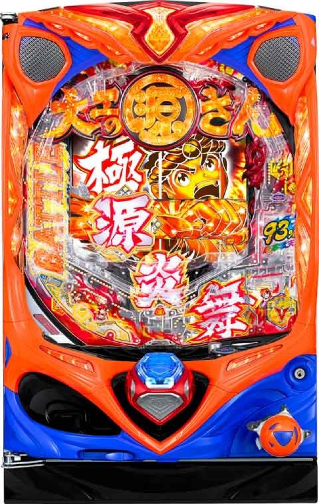

P大工の源さん 超韋駄天
約60.2%で超源RUSHへ。約1/2.06を4回転で狙う高速決着。
- 導入
- 2020年4月
- メーカー
- 三洋物産
- 分類
- パチンコ
主要スペック
初当り約1/318.13、RUSH突入約60.2%、継続約93%の超高継続機です。3カウント決着とFINAL JUDGE、330個・990個の出玉振り分けを簡易体験できます。
- BONUS確率約1/318.13
- RUSH突入約60.2%
- 超源RUSH継続約93%
P大工の源さん 超韋駄天の見どころと計算条件
初当り約1/318.13、RUSH突入約60.2%、継続約93%の超高継続機です。3カウント決着とFINAL JUDGE、330個・990個の出玉振り分けを簡易体験できます。
初代 超韋駄天を数字で早分かり
結果では表記出玉と実獲得出玉を分け、250玉貸し・28玉交換の固定条件で差玉と収支を計算します。
30秒で分かる初代 超韋駄天
少ない回転数で次々に当落が来る、高速・高継続のRUSHを試したい人向けです。
こんな遊び方に向いている
- 短いPUSH当落を連続で楽しみたい
- 約93%の高継続を体験したい
遊ぶ前に確認したいこと
- 右打ちの80%は約330個
- RUSH非突入時は初回約660個で終了
超源チャレンジ突破でRUSHへ
通常時BONUSは大当りと小当りを合算して約1/318.13。初当り後の約60.2%で超源RUSHへ進みます。
初回は6R約660個。シミュレーターでは超源チャレンジの見せ方をRUSH突入PUSHへまとめています。
3回＋残保留1個で約93%継続
右打ち中のBONUSは約1/2.06。電サポ3回の継続期待度約86%と残保留1個約49%を合わせ、トータル約93%です。
大当り後は約330個が80%、約990個が20%。高速消化を再現しつつ、ラウンドと獲得出玉は読める時間を確保して表示します。
固定条件と遊び方
- 20.0回/1,000円・250玉貸し・28玉交換で固定
- 平均初当り投資目安は約15,900円
- 3カウントとFINAL JUDGEをPUSH演出へ簡易化
- 結果は自動でマイ記録へ保存
平均回転と投資目安の計算
通常時のBONUS確率は約1/318.13です。当サイトでは、1,000円あたり20回転という機種別の固定条件を使い、平均投資目安を「318.13 ÷ 20 × 1,000円」で計算します。この条件では約15,900円が平均投資の目安です。
通常スタート、250玉貸し・28玉交換で固定し、超源RUSH突入率60.2%と継続率93%を簡易抽選します。表記出玉とは別に、打ち出しとオーバー入賞を簡易反映した実獲得出玉を収支へ使用します。平均値は長期間の理論上の目安であり、1回ごとの結果や実際の遊技収支を保証するものではありません。
シミュレーション結果の見方
当るまでBONUSまでの回転数と投資目安
RUSH超源RUSHへの突入と連チャン回数
出玉表記出玉と、打ち出しを反映した実獲得出玉
最終収支実獲得出玉を28玉交換で換算した収支目安
結果は自動で「マイ記録」に保存され、同じ機種を何回試したか、最高収支、勝率をあとから確認できます。
簡易シミュレーターについて
BONUS・超源RUSH・出玉の流れを固定条件で体験できます。JavaScriptを有効にすると、この位置にシミュレーター、演出、マイ記録、機種別ランキングが表示されます。
結果は娯楽・確率理解のための参考表示です。金銭的価値や交換価値はなく、実際の勝敗や収支を保証しません。18歳未満の方の利用はお控えください。
初代 超韋駄天のよくある質問
初代 超韋駄天はどんな台？
初当り約1/318.13、RUSH突入約60.2%、継続約93%の超高継続機です。 BONUS確率約1/318.13が主な確認ポイントです。
初代 超韋駄天の平均投資目安は？
当サイトの固定条件では1,000円あたり20回転として、平均15,900円が目安です。実店舗の回転率や持ち玉状況で変わるため、実収支を保証する値ではありません。
シミュレーターでは何を体験できる？
BONUSまでの回転数、超源RUSHへの突入、連チャンと出玉を固定条件で簡易抽選します。実機の全演出や内部状態を完全再現するものではありません。
出玉と収支はどう計算する？
スペック上の表記出玉とは別に、打ち出しロスとオーバー入賞を簡易反映した実獲得出玉を算出します。250玉貸し・28玉交換の固定条件で差玉と収支目安を表示します。